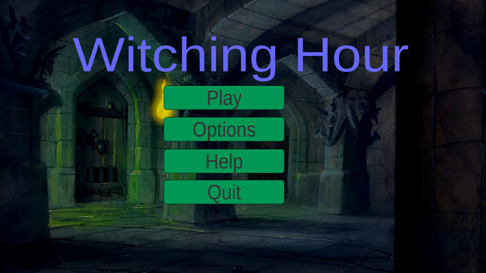
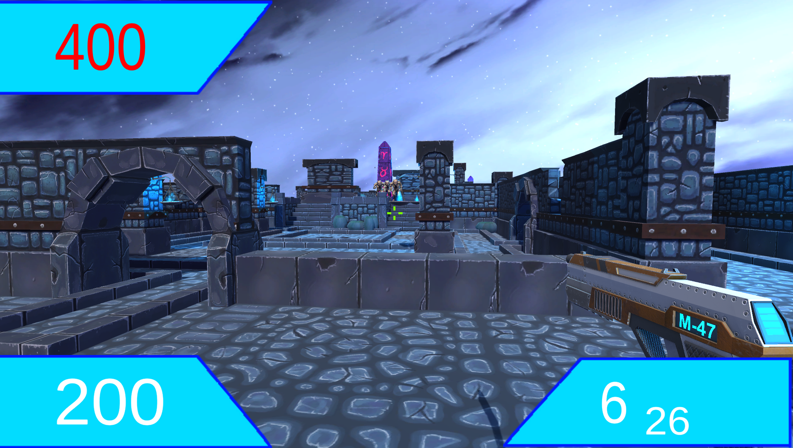

Witchinghour is a First person shoot em up style game made as a solo project in the limited time frame of 4 weeks.
 As my game Witchinghour serves as a platform of which I was able to use as a jumping point to learn about several different areas in the game design space.
Due to my lack of experience in game development, the UI design in particular suffered, as the project mainly relied on the default buttons and text format provided by the Unity editor. The gameplay was designed to mimic old-school shooters like Doom or the original Halo. While the player movement may not do the genre justice, the rewards system and audio were able to somewhat recreate the feel of these older games. However, if given the opportunity to recreate this project, I would incorporate knowledge of more advanced reward systems and introduce a greater variety of enemy types.
 Witchinghour was also designed to be a lighthearted game, with the lose screen locking the player into listening to Rick Astley's "Never Gonna Give You Up"—a song renowned for being used by creators and friends to trick others into listening.
Through this mechanic, I gained valuable insight into how players react. After playtesting, several changes were made to provide clearer user feedback, ensuring that players understood this was not a bug but a punishment for dying. This led to a deeper understanding of player punishment systems.
Witchinghour was also designed to be a lighthearted game, with the lose screen locking the player into listening to Rick Astley's "Never Gonna Give You Up"—a song renowned for being used by creators and friends to trick others into listening.
Through this mechanic, I gained valuable insight into how players react. After playtesting, several changes were made to provide clearer user feedback, ensuring that players understood this was not a bug but a punishment for dying. This led to a deeper understanding of player punishment systems.
you can play through a version of Witching hour on itch.io at: https://fach01.itch.io/witching-hour